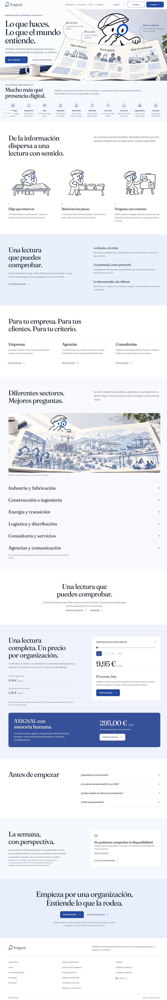
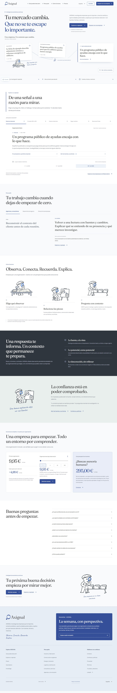
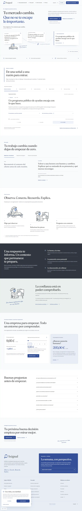

AXIGNAL · EXPLORE · 20 octubre 2026
Una experiencia para mirar, conectar y comprobar.
Entrega visual para aprobación del CTO. Rama aislada, PR #350 en borrador. La homepage pública no se ha sustituido. Código a31e80c37a51; integración revisada hasta #355.
Prueba «Ver cómo conecta», las cinco preguntas, las tres fechas y las fuentes. Compara el precio por organizaciones; abre el boletín y prueba «Volver arriba». Movimiento opcional, navegación nativa. El ejemplo es ficticio, con las capacidades y fuentes sintéticas existentes.
Comparación de composición · anterior y nueva
Capturas completas conservadas de la revisión visual anterior, con la misma base #355: escritorio 1440 × 1000 y móvil 390 × 844. La composición cargada sigue igual: 20 regiones comparadas sin cambios de geometría, fuentes, tamaños o colores. Los estados actuales y sus fechas figuran más abajo. Cada imagen abre el original sin editar.

Homepage anterior · escritorio · abrir captura completa
Nueva landing · escritorio · abrir captura completaHomepage anterior · móvil · abrir captura completaNueva landing · móvil · abrir captura completaEstados actuales · código a31e80c37a51
Capturas nativas sin editar. Procedencia y tamaños · Verificación interactiva · Comparación geométrica. En la demo, pulsa «Ver cómo conecta», abre las fuentes y cambia de fecha.
Captura completa fría · Chrome / Lighthouse
Imágenes completas originales extraídas de los informes actuales, con su procedencia y tamaño propios. Reflejan la carga fría: las ilustraciones secundarias pueden completarse al entrar en pantalla; las capturas de estado y la demo muestran el recorrido cargado. El exportador completo de CUA falló en ambos tamaños; no se han recompuesto ni retocado imágenes para sustituirlo.

1350 × 940 · documento completo412 × 823 · documento completoEstados de la revisión de composición anterior
Rendimiento real de laboratorio · cierre vigente
Cinco muestras móviles frías consecutivas por debajo de 2,5 s y una de escritorio, con el mismo perfil que la referencia. Mediana móvil: 2,484626 s, ready-mobile-2. Accesibilidad 100 y CLS 0 en las seis. Sin advertencias.
Margen estrecho: es laboratorio, no una garantía de cada visita ni una certificación de Core Web Vitals de campo. INP real no disponible. El noindex del laboratorio permanece. Condiciones y hashes · Todas las series diagnósticas · Carga diferida comprobada.
Pruebas y límites
Frontend 420 PASS / cero omitidas. Python 2723 PASS / siete omisiones explícitas por POSIX y SDK opcional: no corresponden a comportamientos añadidos por la landing. Las seis versiones de idioma, HTML inicial y 18 destinos públicos están comprobados.
Frontend · Python y siete omisiones · 18 casos responsive · Interacciones · HTML sin ejecución JS · Build
Contrato vigente: 9,95 €/mes primera organización + 4,95 € por adicional; asesoría humana separada 295 €/mes. Importes de referencia sin impuestos. Design Partner: invitación y sin pago. El boletín local muestra disponibilidad desconocida y no registra solicitudes.
Capturas históricas: primera propuesta. Las imágenes son evidencia de revisión; no son Golden Masters aceptados. No hay merge ni despliegue.